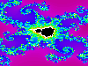

A contribution to The Annotated Grateful Dead
Lyrics. Used with permission. The author reserves all rights.
When analyzing song lyrics, certain basic differences from poetry have to be understood and observed. When comparing popular song lyrics to contemporary or classic poetry, it is difficult not to miss a striking difference in quality--song lyrics generally tend to be outspoken and trite where poetry clouds itself in ambiguity and complex imagery. Bill Flanagan argues that:
"Rock & roll musicians are strange artists. Their code of manners dictates that they not appear to take themselves very seriously, while the best of their work contains all the passion, imagination, and craft of legitimate art. The intelligent rock musician is put in the position of working as hard as a poet or painter, while being expected to accept his gifts with the self- deprecating shrug of the idiot savant." (Flanagan, ix)However, the majority of rock lyricists aims at an audience which is supposed to recognize a song instantly during the few weeks it is played heavy-rotation on FM radio and then forget it as soon as possible. Rock lyrics tend to make a point quickly and to make sure that it is understood. Therefore, they reach for clichéd imagery and blatant statements of emotions that traditional poetry would have tended to skillfully embed in high-flung imagery, a tendency which can lead to examples as inane as the ones parodied in Donald Barthelme's "How I Write My Songs."
One of the reasons, however, why such a direct comparison of lyrics and poetry is not fair is not only to be found in the consumer culture pressures that surround the pop music industry, but in the fact that popular music lyrics are not meant to be read at all. Obviously, the text has to be read within the framework of the music it was written for. This holds especially true for Robert Hunter's lyrics, because the unique nature of the music of the Grateful Dead adds layers of meaning to the text and vice versa. A further point I decided to take into consideration is that the Grateful Dead are not successful as a recording band that scores top ten hits (with the notable exception of the 1987 "Touch of Grey"); their studio albums are usually do not fulfill expectations. The strength of the band is unquestionably the live concert--the Grateful Dead have been the number one grossing touring band over the last couple of years, outdoing the likes of Madonna and Paul McCartney, without releasing a new studio album since Built to Last in 1989. This means that the usual way Hunter lyrics are being perceived is at a concert. Therefore, everything that happens at a Grateful Dead concert should be taken into account when reading the lyrics. In this paper, I will try to show how the Grateful Dead concert experience and the lyrics of Robert Hunter's songs interweave and complement each other, mutually adding significance and "meaning" to one another.
One model on how to understand the mutually reinforcing structure of a rock concert can be abstracted from Erika Fischer-Lichte's The Semiotics of Theater. Of course, according to Fischer-Lichte's definition, a concert does not constitute theater; however, her theories can give valuable ideas for a way of looking at the experience of a concert. According to Fischer-Lichte, every sign that is given during the performance can be assigned to a group or system, and the sum of all used and received signs that either correspond or oppose each other in meaning allow an overall interpretation or understanding of the performance. The fourteen sign systems Fischer-Lichte enumerates are: sound, music, linguistic signs, paralinguistic signs, mimics, gestures, proxemic signs, mask, hair, costume, stage conception, stage decoration, props, and lighting. These all make sense in a rock concert environment, especially in more theatrical performances as they became common with stadium bands during the 1970s. An additional system of significance would be the song selection and order, which might be considered a subgroup of the music or linguistic groups. Audience participation should be included, as well. Unless a lot of spoken text is involved, the paralinguistics can not be considered significant, since the loudness, pitch, etc. of a song are inherent in the music and therefore do not justify a group of their own. Props are rare in rock concerts, as well, although some performers have been known to turn their instruments into significant objects, such as Liberace or Prince.
The uniqueness of a Grateful Dead concert lies in the emphasis on certain sign systems over others. While obviously almost every rock concert relies heavily and primarily on the music and the linguistical signs (which are, after all, our objects of interest), the Dead emphasize them more than usual by cutting down on the others--the stage decoration is colorful yet unobtrusive, there is no dancing or hardly any movement by the band members other than what is necessary to play the instruments, the clothing of the band is purely functional and they stopped conversing with the audience years ago. The lighting, designed by Candance Brightman since 1972, is not self-conscious but supports the music:
"Brightman's lighting is extraordinarily sensitive to subtleties in the band's interactions, shunning bombastic effects for a vivid focusing of attention that is as much a part of the jam as the music itself" (Shenk 28).Furthermore, it includes the audience by
"[breaking] down the barriers between the Dead and its fans by lighting the band so they can still see the audience, or by lighting the audience itself" (Shenk 29).An important point to note is that none of the sign systems function to enhance the star status of the band-- everything is focused on the music and the relation to the audience. The absence of proxemic signs, mask, hair, props, and costumes is significant in that it enhances the emphasis on the music and the lyrics while taking away from the special status of the band members.
The order of songs, though, is of exceptional importance during a Grateful Dead show. Traditionally, since about 1977, the show is split into a first and a second set, where the first set is characterized by more conventional songs that are played without too much improvised jamming; the length of the songs stays within reasonable limits as well. The second set, in contrast, features many improvised jams that stretch the songs easily out to fifteen, twenty minutes. At some point in the second set, Mickey Hart and Bill Kreutzman (percussion & drums) will take over and play an extend drum solo while everyone else leaves the stage. Before they are finished, the other band members return, and Hart and Kreutzman leave the stage. What follows is an extended, beatless jam of exploratory sounds known as "Space." Bob Bralove, in the liner notes to Infrared Roses, describes it like this:
"Somewhere in the middle of the second set of every Grateful Dead show the band turns a corner. They enter a musical environment without walls or structure. The song form is abandoned, and the very elements of music may be called into question. The only mandate is to explore new territory. It is an environment where rhythm, tone, color, melody, and harmony can be explored without rules or predetermination, a musical adventure where composition and performance are one."
After "Space," the band will play three or four more songs, commonly ending with a high- energy song like "Good Lovin'" or "Sugar Magnolia," and come back for a one-song encore. This pattern forms a relatively firm structure in which highly unstable elements are put--the music is always improvised, and not one song has been played twice the same way, and the actual list of songs played always varies, to the point where not even the band members know what they will play before they go on stage.
This is of high importance because the underlying structural principle will become evident in Hunter's lyrics, as well. Since certain songs are usually played in the first set and others in the second set, it seems reasonable to group them according to this differentiation and begin by taking a closer look at the first set songs.
"Jack Straw" is a classic first set song--out of the 424 times it had been played between 1971 and 1992, DeadBase lists only 41 second-set appearances. The song appears to be a narrative of a criminal character who drifts through the American wilderness, jumping trains and digging graves while eagles circle high above. It seems to be rooted deeply in an American tradition of fireside songs. The same holds true for "Dire Wolf," a bitter story of death and gambling, precisely set in time and space:
In the timbers of Fennario
the wolves are running 'round
The winter was so hard and cold
froze ten feet 'neath the ground (1-4)
The narrative features virtually no metaphors or similes; everything seems to happen at face value--a complicated search for meaning or "interpretation" is unnecessary. Again, the song is closer to traditional American music than love songs heard on the radio. It is direct yet not necessarily blatant or trite since the subject matter is uncommon for contemporary American rock lyrics.
The Grateful Dead classic "Truckin'" features some opaque references, yet the song is obviously trying to capture the vicissitudes of a life on the road as the band members have experienced it. Some lines, like "Busted--down on Bourbon Street" (37) refer to commonly known incidents (in this case the band's drug bust in New Orleans); others like "What in the world ever became of sweet Jane?" (25) are probably in-jokes that aren't meant for a broad audience to grasp.
Even more clearly an American song in the best tradition of folk singers like Woody Guthrie or Phil Ochs is "Cumberland Blues," a song depicting the plight of a mine worker. Hunter's eye in describing his topic was so sharp that he heard of an actual Cumberland miner wondering "what the guy who wrote this song would've thought if he'd ever known something like the Grateful Dead was gonna do it." He considers this the best compliment he ever received for a lyric (Hunter 52), obviously because it certifies an authenticity he aimed for.
It seems that first set songs commonly share a genuine American topic (the open road, the wilderness, unions, etc.) and often sketch a narrative world including characters and situations. Instead of propagating emotions, as rock lyrics often seem to, they focus on fictional events that often involve gamblers, cowboys, drunkards, and outlaws. The imagery and "lyrical" makeup of the songs tends to be simple so as to give a definitive, discernable "meaning."
An investigation of second set songs quickly shows that they are of a different character. "China Cat Sunflower," a typical second-set song since the early eighties, may serve as a prime example: the lyrics refuse any narrative or symbolic reading, the words simply are. Hunter acknowledges the non-rational nature of the song with his tongue-in-cheek remark: "Nobody ever asked me the meaning of this song. People seem to know exactly what I'm talking about. It's good that a few things in this world are clear to all of us" (Hunter 35).
Nonsensical as they may be, the lyrics bear a close resemblance to the dreamy, colorful playfulness of Lennon/McCartney's "Lucy in the Sky with Diamonds"--
Picture yourself in a boat on a river,In the surrealistic, candy-colored playfulness of both songs, the words are not meant to "mean" anything; the usual tools of interpretation have to fail here. As Hunter says, "I like a diamond here, a ruby there, a rose, certain kinds of buildings, vehicles, gems. These things are all real, and the word evokes the thing. That's what we're working with, evocation." (Gans 26). His concern is not merely narrative or mood anymore, but evocation and association, something much closer to poetry than to the common clichés of pop lyrics.
With tangerine trees and marmalade skies
Somebody calls you, you answer quite slowly,
A girl with kaleidoscope eyes.
Cellophane flowers of yellow and green,
Towering over your head.
Look for the girl with the sun in her eyes,
And she's gone.
Lucy in the sky with diamonds (1-9)
"Crazy Fingers" is another example for this approach to songwriting--it is content with letting its verses set a mood without making any "sense." Hunter calls it a "collection of haiku- style verses, mostly seventeen syllables, some more successful than others, with no connecting link other than similarity of mood" (Hunter 45). Some of the imagery is indeed not very original; the "Deep Sea of Love" (7) can surely be encountered elsewhere. Nonetheless, certain paradoxical images (like "Recall the days that still are to come" (3)) and the overall disjunctive structure of the text make for a strange, unlikely song that refuses to be "understood" on any intellectual level. It can only be described in its emotional impact, the longing and bittersweet reminiscing it evokes in a unique way.
Similar points can be made for "Eyes of the World"-- it is interesting to note that the lyrics seem to make sense, yet on any "objective" level, they do not. Traditional analysis of the text may or may not yield satisfactory results by assigning connotations and significance to, say, the "redeemer"(22) , the mile-long wings (7) or the "eyes of the world" themselves; fact is that the inherent instability of the lyrics, fueled again by interior contradictions like "...the seeds that were silent / all burst into bloom and decay," (26-27) will not allow for a final, reductive interpretation. It is clear that Hunter does not aim to communicate "meaning" at all; he says, "I'd really prefer not to get into tearing apart the symbology of my songs [ . . . ] and I'll tell you why: symbols are evocative, and if there were a more definite way to say things, you'd say them that way. A symbol, by it's very nature, can pull in many, many shades of meaning, depending on the emotional tone with which you engage the piece" (Gans 23).
The lyrics of songs commonly played as encore or to close the second set are often more direct (as "Sugar Magnolia") or soothing lullabies ("Brokedown Palace").
The course of a Grateful Dead concert, then, can be said to describe an arc that ranges from traditional, narrative lyrics that concur with conventional playing to outrageous flights of fancy in the second set, correspondingly in the musical jams as well as in the ambiguity-laden, irrational, highly evocative lyrics. The strangeness climaxes during the purely instrumental "Space," during which the band is at its most exploratory. The last songs and the encore return the audience to a festive or pensive mood. However, the function of the lyrics during a Grateful Dead concert is more than to simply underline the music--the linguistic signs are not present to emphasize what is happening in the music. Instead, there seems to be a strange interplay between familiarity and newness, and it is at this edge of the well-known and the innovative that the Grateful Dead draw energy. Audience response is a valuable key to this aspect of the music and the lyrics.
Experience and my subjective impression suggests that the audience at a Grateful Dead show is usually more responsive and alert than audiences at other rock concerts, but since there is no data to prove or argue this point, it can not be made in a meaningful way. What is observable and obvious, though, are the immense cheers and shouts that erupt at certain points in the concert, namely when the band returns from a long stretch of interpretation to the melody (and therefore, mostly, the lyrics), and at certain catchphrases within the lyrics that have gathered almost mystical meaning over the years. Both phenomena need to be looked at more closely.
In the improvisational style of the Grateful Dead ("jazz syntax with a rock lexicon," as David Gans calls it (ix)), melody as one of the markers signifying a song is subject to sudden change-- at its best, the band composes on the stage, making up new elements on the go; the process of creating becomes visible to the audience. Part of the philosophy that allows this approach is that mistakes are possible, probable, and excusable-- "on a bad night, they bore you to tears, but a good night makes it all worth it." (Gans iix) The initial melody of the song, however, is not variable, and it is always safe to predict the band's return to it after a period of jamming that is so utterly unpredictable in direction, style, and length that not even the band itself can foresee what will happen: "I can't predict what the band is going to do at any given moment" (Jerry Garcia quoted in Gans 59).
Since the lyrics will be sung only once the proper, initial melody has returned, the counter argument is mostly true, also--when the melody returns, so will the lyrics. The audience cheers at these points because the return of the melody and therefore the lyrics means a return to the familiar, to the predictable and understandable after long forays into the unknown.
While this holds true for virtually any return to the preestablished, well-worn structural elements of the song, certain catchphrases within Hunter's lyrics seem to yield an especially enthusiastic response by the audience. A good example for this is "If you get confused, listen to the music play" (20) from "Franklin's Tower", a line that taken by itself offers guidance to a perplexed listener. Yet it is embedded within a song that is as obscure as a lot of second set- lyrics; "Franklin's Tower" is evocative yet of undeterminable meaning. The above-mentioned catchphrase-line is almost hidden within the song and has to be read out of context to prompt the joyful response it usually gets.
More obvious examples of the embedded catchphrase are to be found in first-set songs like "Loose Lucy," a rare Hunter love song, where the audience chooses to take the chorus out of context by applying it to the band itself: "Singing: Yeah, yeah, yeah, yeah / singing: Thank you / for a real good time" (7-9). Here, the function seems to be that of a mutual pat on the back; the cheers represent the subculture of Deadheads and the Grateful Dead acknowledging each other's faithfulness--it is here that it becomes manifest that the "Dead made a mystical pact with their fans, vowing to carry the psychedelic torch as long as they can play their music" (Lee 290). Whether Hunter had such an opportunity for unique bonding in mind when he wrote the lines remains undetermined, yet the authors of Skeleton Key could not but remark on Hunter's "knack for coining aphorisms that yield hard-won truths after hundreds of hearings" (150). The most famous example is certainly the oft-quoted "Lately it occurs to me / what a long, strange trip it's been" (23-24) from "Truckin'," a line that paradoxically admits to the uniqueness of the experience by being its most clichéd example.
It seems that a lot of these phrases took on the meaning for the Deadhead community that they did because they were obvious and understandable. On a paradigmatic level, it should be surprising that a band that is so directly associated with a certain lifestyle and a set of beliefs as the Grateful Dead hardly convey any "messages" at all in their lyrics. It can be safely assumed that one would generally expect a "hippie band" with all the unavoidable stereotypes, to be much more blatant about their convictions. Yet, as the above analysis already shows, Hunter usually confines himself to a narratives of traditional American adventures in the broadest sense and more abstract, lyrical, and image-laden texts that only yield "meaning" by association and evocation.
However, there are lines hidden within his lyrics that have taken on very charged connotations exactly because they seem to be more outspoken and direct, and a philosophy can be attributed to them. All these lines have turned into catchphrases as well, cheered at concerts and printed on countless t-shirts and bumper stickers.
"Scarlet Begonias," a song commonly played to open the second set yet at least somewhat narrative in that it has a narrator and a female character, yields two instances of embedded catchphrases-- "Once in a while / you get shown the light / in the strangest of places / if you look at it right" (31-34) and "Strangers stop strangers / just to shake their hand" (46-47). The philosophies that can be abstracted from these lines by reading them out of context include the search for truth in unlikely places, maybe in the tradition of the "angel-headed hipsters" (2) who roam the urban wasteland in Ginsberg's "Howl," and a proclamation of unsolicited friendliness and openness that the stock and trade of the hippiedom the Grateful Dead supposedly stand for. All this is abstracted again from the less direct context the lines originally appear in; the Deadhead community seems to have taken what it could and abandoned the quirky senselessness of "The wind in the willows played tea for two / The sky was yellow and the sun was blue" (44- 45). The argument could be made that the aphoristic lines are not only cheered at because of what they mean and imply, but simply for the fact that they mean at all. They are familiar lines within an ambiguous lyrical world that refuses to be reduced to a discernable, single interpretation. The catchphrases are familiar lines within a familiar yet, to the rational mind, unyielding lyrical world. "Scarlet Begonias" refuses to be understood as a whole, so the audience jumps at those four lines that seem to make sense. The catchphrases, then, are to the rest of the lyrics what the melody is to the improvisational jam--they mark the return to an understandable, well-known, and familiar touchstone before the next journey into newness and obscurity.
This phenomenon can probably be best understood when looking at what is generally considered the prime example of the Grateful Dead's efforts, "Dark Star":
" "Dark Star" is the kernel of wide open possibility at the core of the Dead's repertoire, the essential seed promising unlimited intergalactic space journeys at the speed of total mindwarp: "Shall we go,/ you and I/while we can?" It is the most exploratory of Dead tunes and it is the trippiest, the one where the acidic whistle of the dark interstices is heard most starkly, where you might turn any corner and step off into the void. It is the Dead's spirit of musical adventure at its strangest, wildest, most vehement, weirdest, dreamiest, and the place where the leading wave of the Dead's music is most often audible being created in mid-air." (Jim Powell quoted in Shenk 51)Interestingly, "Dark Star" was the first song that Hunter wrote together with the Grateful Dead in 1967. The lyrics are extremely short, considering that a full-fledged "Dark Star" can easily last half an hour. The song is made up by two verses that are usually separated by minutes and minutes of intense jamming. A close reading reveals Hunter's technique of juxtaposing the abstract and the concrete in a single image, parataxis, and contradiction in full bloom. "Searchlight casting / for faults in the / clouds of delusion" (7-9) is such a tricky image, suggestion that the speaker has a very clear sense of what he is talking about, yet again, the song cannot be said to "mean" anything in any traditional sense, and not even the tedium of a symbolic reading will yield any "meaning." However, the verse beginning "Shall we go..." which precedes the next drawn out jam insinuates that the speaker understands, and invites the reader along through the "transitive nightfall / of diamonds" (14-15). The drawn-out jam that usually follows can be understood as exactly the "transitive nightfall / of diamonds," the lyrics then talking about the music, a kind of meta-lyric. After seemingly endless improvisation, the text and melody returns with "Mirror shatters" (16), an event cheered by the audience as it means the return to a familiar signpost.
It has been argued that "Dark Star" draws its power from the violation of norms and the constant impossibility of assigning meaning:
" ['Dark Star' leads] to a transcendent mysticism because the music, continually violating norms and expectations, avoid a clear marking or denotation of a signified. What is left is a state of ambiguity in which the listener is enticed into closer attention of momentary detail." (Skaggs, quoted in Shenk 64)I would argue that the overwhelming power of "Dark Star" and, in a broader sense, the overall effect of a Grateful Dead show, does not entirely rely on the elusiveness of its signs, be it musically or linguistically, but on the tension it creates between the familiar and the new. The Deadhead community as a whole exists because of the familiar aspects of the Dead. The fascination of the band grows largely out of the relationships between the improvised and the structured that are increasingly complex to the point of becoming fractal.
The model that I would suggest for the intricacies of a Grateful Dead show and the rich relationships that exist between the lyrics and the music is that of fractals, self-containing geometrical structures like the Mandelbrot set. The outside of the Gingerbread man are the ordered regions, where a number can easily be assigned to the function, z (n+1)=z(n)2+c, while the black inside of the Gingerbread man stands for total, absolute chaos, unstructuredness. The edge where those two areas meet is characterized by intense, bizarre beauty and recurring images of the bigger picture that recede--like a Russian doll, the Gingerbread man contains images of himself, infinitely, just as a Grateful Dead concert contains recurring patterns of familiarity and innovation on a receding scale. The overall structure of the concert is firm, or almost firm--there are always exceptions, yet the pattern of first and second set, drums, space, and encore are set. This structure is filled with actual songs every night; the choice of songs varies, yet the songs are generally well-known and familiar.
The way they are going to be played on any given night, however, is uncertain and actually unpredictable--no improvisational jam that opens in preconceived places within the song will be the same, yet it can be assumed it will be at a given place. The lyrics, joining the return to the melody, are firm and part of a preconceived pattern within a song. They will not be changed or tampered with. However, the firm and unchanging lyrics have shown themselves to be unsteady and undecidable due to their ambiguous and contradictory character. This is only true, again, for the most part, since the lyrics do contain embedded catchphrases that possess a heightened familiarity within the song. The audience will recognize and appreciate these moments of predictability and profound understanding as a community before the jam wanders off into unknown directions again, possibly into the far reaches of musical exploration in "Dark Star" or to the completely strange and wordless "Space," which can be considered the climax of unfamiliarity within the development of the concert. After the purely instrumental excesses of "Space," the return of rhythm, harmony, melody, then lyrics, and finally understandable and rational lyrics is greeted by enthusiastically by the audience which is pleased to be gently returned to a sensical universe where exploration and rediscovery, departure and return, ambiguity and blatantness co-exist and fuel each other. Hunter's lyrics are allowed to be reasonably narrative and plain-old weird at given times; the music always corresponds to or counter-accentuates the words, both live off each other in an organic and healthy way. Standing on their own, the lyrics to "Dark Star" might seem interesting and lyrical yet pointless; in union with the music, they gather as many meanings as the listener can assign to them:
[Jerry Garcia:] "Dark Star" has meant, while I'm playing it, almost as many things as I can sit here and imagine, so all I can do is talk about 'Dark Star' as a playing experience. [Charles] REICH: Well, yeah, talk about it a little. [Jerry Garcia:] I can't. It talks about itself. [Charles] REICH: Each time it comes out in a different way? [Jerry Garcia:] Yeah, pretty much. There are certain structural poles which we have kind of set up in it, and those periodically we do away with. (Garcia 85)The music of the Grateful Dead and the lyrics of Robert Hunter open up spaces within the work of art they form together that make textual interpretation of the lyrics futile. The lyrics function not as an absolute that is stated, but as a tool for semiosis--at every concert, they can and do mean something different according to how the variable parts in the music change. Every time a song is performed, a different set of potential meanings that are inherent in the piece will be actualized for a different audience. Various parts of the concert experience are firm, others are variable, and as I tried to illustrate using the Mandelbrot set, the firm parts contain further movable aspects, and vice versa. The resulting multi-media, multi-sign system artifact can shine in infinite variations. The result is one of an ever-changing, fluctuating whole that contains familiar parts while never completely yielding to reason. This amorphous, continuously self- altering gestalt that is a thirty-year process --the seams show, there are parts that are completely opaque and others that we have known for decades, and it always changes: "It stumbles, then it creeps, then it flies with one wing and then it flies with one wing and bumps into trees and shit" (Garcia 76). Deadhead sociologist Rebecca Adams puts it this way: "People say Deadheads are throwbacks. I think they are pioneers. They recognize that reality is subjective--there is no right way--and have been cognizant of these multiple realities for a lot longer than most other people. This is post-modernism. It's the cutting edge" (quoted in Shenk xiii). Robert Hunter's lyrics are a vital part of this experience, providing the mind-searching music with an incessantly fascinating imagery that both underscores and counter-points its meaning by not meaning anything at all.